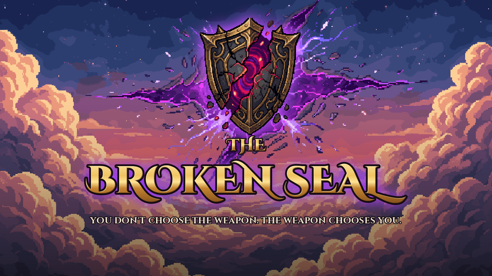
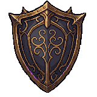
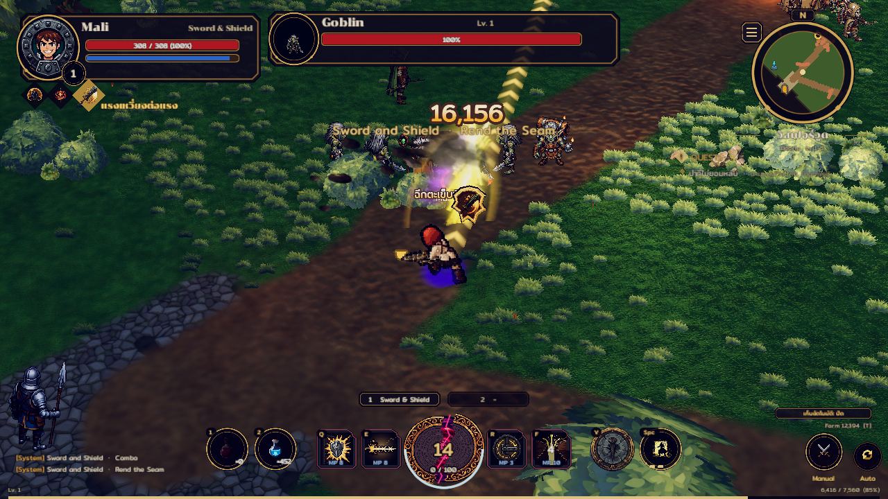
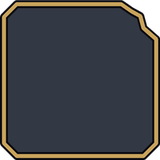
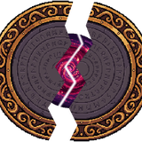
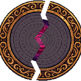
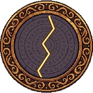
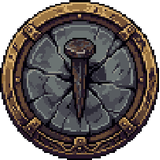

Windows
ดาวน์โหลดสำหรับ WindowsDownload for Windowsแตก .zip แล้วเปิดเกม หาก Windows SmartScreen เตือน กด “More info” แล้ว “Run anyway” Unzip and run the game. If Windows SmartScreen warns you, click “More info” then “Run anyway”.

"ไม่ใช่เจ้าที่เลือกอาวุธ… แต่อาวุธต่างหาก ที่เลือกเจ้า" "You don't choose the weapon. The weapon chooses you."
สาดสกิลรัว ๆ ในโลกแฟนตาซีสดใสที่ยิ่งลึกยิ่งมืด เมื่อผนึกโบราณแตก ประตูมิติเปิดขึ้นทั่วโลก มอนสเตอร์คลุ้มคลั่ง และอาวุธที่ตีจากเศษผนึกกลายเป็นครูผู้ถ่ายทอดวิชาให้คุณ Spam skills nonstop in a bright fantasy world that grows darker the deeper you go. The ancient seal has broken, gates have opened across the world, monsters have gone mad, and a weapon forged from the seal's shards becomes your teacher.
เปิดทดสอบ Alpha ใน Alpha test opens in Alpha จะสิ้นสุดใน Alpha ends in ขอบคุณทุกคนที่ร่วมทดสอบ Alpha — เจอกันในเวอร์ชันถัดไป Thank you to everyone who joined the Alpha — see you in the next build.
ทดสอบ Alpha: อังคาร 17 พฤศจิกายน 18:00 – อังคาร 1 ธันวาคม 2569 (เวลาประเทศไทย) Alpha test: Tue 17 November, 18:00 – Tue 1 December 2026 (Bangkok time, UTC+7)
ลิงก์จะเปิดให้กดเมื่อเริ่มรอบทดสอบ 17 พ.ย. 18:00 Links go live when the test round starts on 17 Nov, 18:00 รอบทดสอบเปิดแล้ว เลือกแพลตฟอร์มของคุณ The test round is open — pick your platform รอบทดสอบ Alpha สิ้นสุดแล้ว ลิงก์ถูกปิด The Alpha round has ended; the links are closed
แตก .zip แล้วเปิดเกม หาก Windows SmartScreen เตือน กด “More info” แล้ว “Run anyway” Unzip and run the game. If Windows SmartScreen warns you, click “More info” then “Run anyway”.
แตก .zip แล้วลากแอปไปไว้ใน Applications แล้วเปิดเกม Unzip, drag the app into Applications, then open it.
เปิดลิงก์ทดสอบด้วยบัญชี Google ที่สมัคร Alpha ไว้ แล้วกดติดตั้งผ่าน Play Store Open the test link with the Google account you signed up with, then install from the Play Store.
ติดตั้งแอป TestFlight จาก App Store ก่อน แล้วเปิดลิงก์เชิญเพื่อติดตั้งเกม Install the TestFlight app from the App Store first, then open the invite link to install the game.

ตำนานเล่าว่า ในยุคของเทพบรรพกาล เหล่าเทพต้านทานอสูรจากต่างมิติมานับพันปี สงครามไม่เคยจบลง จนเทพกลุ่มหนึ่งสิ้นศรัทธา และเลือกไปยืนข้างอสูร เทพที่เหลือจึงสละตัวเองสร้างผนึกขึ้น ส่วนพลังของวีรชนที่สู้เคียงข้างถูกเก็บไว้ในอาวุธ Legend tells that in the age of the ancient gods, they held back monsters from another world for a thousand years. The war never ended, until some of the gods lost their faith and chose the monsters' side. The faithful ones gave themselves to forge a seal, and the strength of the heroes who fought beside them was left inside their weapons.
คืนหนึ่งระหว่างมื้อเย็น คุณเล่าตำนานนี้ให้น้องสาวฟัง น้องถามขึ้นมาว่า "เทพฝั่งนั้น… ยังอยู่ไหม" คุณหัวเราะ บอกว่ามันก็แค่นิทาน คืนนั้นเอง ประตูเปิดขึ้นทั่วโลก และน้องของคุณถูกดูดหายเข้าไป One evening over dinner, you told this legend to your little sister. "Are the gods on the other side… still there?" she asked. You laughed it off as a story. That same night, gates tore open across the world, and she was pulled through.
คุณเป็นแค่ชาวบ้านธรรมดา แต่อาวุธที่ตีจากเศษผนึกเลือกคุณ มันจดจำการต่อสู้ของวีรชนที่ไม่มีใครจำชื่อได้อีกแล้ว และพร้อมสอนทุกท่วงท่าให้มือที่ไม่เคยจับอาวุธมาก่อน You are only a villager, but a weapon forged from the seal's shards chose you. It remembers the battles of heroes no one can name anymore, and it will teach every move to hands that have never held a blade.
ทุกคนคิดว่ารู้จักตำนานนี้ดี แต่ตำนานในหนังสือ… ใครเป็นคนเขียน? และน้องของคุณยังรออยู่ที่ไหนสักแห่งหลังผนึกหรือไม่? Everyone thinks they know this legend. But who wrote the version in the book? And is your sister still waiting, somewhere beyond the seal?
กดรัวไม่มีผิด คอมโบ "สั้น สั้น สั้น ค้าง" ค้างปุ่มได้ท่าปิด กดตรงจังหวะได้โบนัส แทรกสกิลได้ตลอด สกิลหนึ่งทิ้งรอยไว้ให้อีกสกิลจุดระเบิด มอนกระเด็น แตกกระจาย และสลายเป็นเถ้า Mashing is never wrong. Combos go "short, short, short, hold": hold for a finisher, hit the rhythm for a bonus, and weave skills in at any time. One skill leaves a mark for another to set off, and monsters fly, shatter and crumble to ash.
ไม่มีอาชีพตายตัว อาวุธคืออาชีพ! ตัวละครเดียวฝึกได้ทุกอาวุธ ใช้อาวุธไหนบ่อย Weapon Mastery ของอาวุธนั้นก็โตขึ้น จัดอาวุธไว้ 2 ชุด (Preset) แล้วสลับนอกการต่อสู้ No fixed class: your weapon is your class. One character can train every weapon, and the one you use grows its own Weapon Mastery. Keep two weapon presets and swap between them out of combat.
ฮีโร่ 3D ลายเส้นการ์ตูน มอนสเตอร์พิกเซลอาร์ต บนแมพ 3D แสงสวย Toon-shaded 3D heroes and pixel-art monsters in bright, atmospheric 3D worlds.
Ultimate ไม่ได้มาจาก Skill Tree แต่มาจากอาวุธมรดกวีรชนที่ดรอปในโลก เงาวีรชนสิงร่างคุณ สกิลแรงขึ้นพร้อมลูกเล่นเฉพาะของวีรชนตนนั้น ใช้ได้ทุกอาวุธ Ultimates come from legacy weapons dropped in the world, not the skill tree: a hero's shadow possesses you, powering up your skills with that hero's own trait. Any weapon can use any of them.
ภาพจากเกมจริง อัปเดตตุลาคม 2026 · เปิดเสียงเพื่อฟังการต่อสู้ Captured in-game, updated October 2026 · turn the sound on
* ช่วง Ultimate ยังไม่มีเสียง · ระบบ ตัวเลข และเอฟเฟกต์ทั้งหมดยังอยู่ระหว่างพัฒนา อาจเปลี่ยนแปลงได้ * The Ultimate clips have no sound yet · systems, numbers and effects are still in development and may change.
ความเร็วและเอฟเฟกต์จากการต่อสู้จริงในเกม Witness the intense action and dynamic effects captured straight from the engine
* สกิลชุดใหม่ (ตำนานวีรชน) พร้อมเสียงในเกม อัปเดตตุลาคม 2026 · ยังไม่รวม Ultimate · ทุกอย่างยังอยู่ระหว่างพัฒนา อาจเปลี่ยนแปลงได้ * The new legend skill set with in-game sound, updated October 2026 · Ultimates not included · everything is still in development and may change.
โล่สะสมรอยร้าวแล้วปล่อยคืน และรอยฟันค้างฟ้าที่ระเบิดเมื่อสกิลถัดไปผ่าน A shield that stores cracks and releases them, and cuts that hang in the air until your next skill sets them off.
สายที่แสดง: ผู้เฝ้าประตู แล้วต่อด้วย ดาบรอยต่อ Shown: Gatekeeper, then Seam Blade
เวทผนึก 3 สำนัก ฉีก / ผนึก / ก้อง วงเวทลอย วงเวทบนพื้น และวงเวทบนฟ้า Sealcraft in three schools, Rift / Seal / Echo, with floating, ground and sky magic circles.
สายที่แสดง: เวทผนึก Shown: Sealcraft
คอมโบ 5 จังหวะ เงาหมึกฟันซ้ำ และการกดตามจังหวะของบทเพลงโลหิต A five-step combo, an ink shadow that strikes again, and the beat of the Crimson Requiem.
สายที่แสดง: เงาหมึก และ บทเพลงโลหิต Shown: Ink Shadow and Crimson Requiem
ประตูดาวที่ลูกศรบินผ่านแล้วแรงขึ้น และบ่วงเวลาที่ดึงมอนย้อนกลับ Star gates that power up the arrows flying through them, and a time snare that drags monsters back.
สายที่แสดง: ศรเจาะมิติ และ บ่วงเวลา Shown: Rift Arrow and Time Snare
ดาบโล่ · มีดคู่ · คทา · ธนู รวมทีมล้มบอสโลกด้วยสกิลชุดใหม่ (อัดใหม่ ตุลาคม 2026) Sword & Shield, Dual Daggers, Staff and Bow take down a world boss with the new skill set (recorded October 2026).
* ฉากสาธิต: ตัวละครควบคุมด้วยบอท ระบบปาร์ตี้ออนไลน์จริงจะเปิดในช่วง Alpha Test · เปิดเสียงเพื่อฟังการต่อสู้ * A demo with bot-controlled heroes; online parties arrive with the Alpha Test. Turn the sound on for the full fight.
หินดำ ทองคำ รอยร้าว และ Rift ทุกกรอบพูดภาษาเดียวกับโลโก้ Dark stone, gold, cracks and the Rift: every frame speaks the logo's language

เห็นเฉพาะสิ่งที่ต้องรู้ตอนนั้น เดินทาง HUD จางลง เริ่มสู้แล้วค่อยชัดOnly what you need right now: the HUD fades while you travel and sharpens in combat.
สิ่งสำคัญที่สุดอยู่ใต้สายตา กลางแถบสกิลคือ Seal Core แกนพลังของอาวุธWhat matters most sits under your eye: the Seal Core, your weapon's power, is the centre of the skill bar.
ทุกชิ้นมาจากเรื่องของเกม เราคือคนที่ต้องซ่อมผนึก ผนึกที่เปิดอ้าจึงหมายถึงอันตรายEvery piece comes from the story: you mend the seal, so an open seal means danger.

Memory Shard: เศษความทรงจำมุมบิ่นMemory Shard: a chipped shard of memory

Seal Core เปิดอ้า Rift รั่ว = อันตรายThe Seal Core gapes open: Rift leaks out, danger

ยิ่งสู้ ทองยิ่งไหลเติมรอยร้าวFighting fills the crack with gold

ผนึกสมบูรณ์ รอยต่อทองสว่างMended seal, bright gold seam: power ready
ตราผนึกสมบูรณ์A whole seal
ตราผนึกมีรอยร้าวA cracked seal
ตอกตะปู ใหญ่กว่าและอยู่หน้าสุดNailed down, larger and always first
ขวดในห่วงหนีบ Seal ClaspA vial held in a Seal Clasp

ตราถูกตอกปิด รอให้ออกล่าA nailed-shut seal: go hunt one
อาวุธแต่ละชิ้นเก็บความทรงจำของวีรชน 1 คน ทุกสกิลคือฉากหนึ่งในความทรงจำนั้น · ตอนนี้เปิดให้ใช้ 4 อาวุธ สกิลของแต่ละอาวุธจัดเป็น 2 ตำนานย่อยให้ดูง่าย แต่ไม่ล็อกสาย หยิบมาผสมใส่แถบสกิล 4 ช่อง + Ultimate ได้ตามงานที่จะไป · ใส่ความทรงจำวีรชน (Passive) ได้ 3 ช่อง และจัดชุดสกิลแยกตามงาน เช่น ฟาร์ม บอส ดันเจี้ยน สลับได้นอกการต่อสู้ Each weapon keeps the memory of one hero, and every skill is a scene from it · four weapons are open for now. Each weapon's skills are grouped into two legends for easy reading, but nothing is locked: mix them into a 4-slot bar + Ultimate for the job ahead · equip three hero memories (passives) and keep separate skill sets for each job, such as farming, bosses or dungeons, swapped out of combat
ตำนานผู้เฝ้าประตูคนสุดท้าย Legend of the Last Gatekeeper
โล่สะสมรอยร้าวจากการโจมตีที่รับไว้ แล้วปล่อยคืนเป็นแรงระเบิด ยืนแถวหน้า ยั่วยุ และกันปาร์ตี้ Your shield stores cracks from the blows it takes and releases them as a blast: hold the front, taunt and shield the party.
รอยฟันค้างอยู่กลางอากาศ แล้วระเบิดเมื่อสกิลถัดไปฟันผ่าน วางรอยไว้ก่อน ค่อยจุดทีเดียว Your cuts hang in the air and burst when your next skill passes through them: lay the seams, then set them off.
ตำนานผู้ไร้เงา Legend of the Shadowless
หมึกลดเกราะศัตรู และเงาหมึกจะฟันซ้ำทุกเป้าที่ติดหมึก Ink lowers armour, and your ink shadow repeats your slashes on every inked target.
กดสกิลให้ตรงจังหวะ ครบ 5 โน้ตติดกันระเบิดเป็นคอร์ดโลหิต Cast on the beat: five notes in a row burst into a Blood Chord.
ตำนานผู้จารึกผนึก Legend of the Seal Scribe
ฉีก: รอยแยกดูดมอนมารวมกองก่อนระเบิด · ผนึก: วงอักขระเชื่อมกันเป็นตาข่าย · ก้อง: ทุกการร่ายครั้งที่ 3 คาถาสะท้อนซ้ำเอง Rift: tears pull monsters into one pile before they burst · Seal: rune circles link into a web · Echo: every third cast repeats itself.
ฮีลปาร์ตี้จากการโจมตี วางตราชีวิต และยังสู้คนเดียวได้ Heal the party by attacking and lay Life Marks, while still able to fight alone.
ตำนานนักล่าดวงดาว Legend of the Star Hunter
เปิดประตูดาว ลูกศรที่บินผ่านประตูจะแรงขึ้น และฝนดาวตกลงผ่านประตูบานล่าสุด ยิงขณะเดินได้ Open star gates: arrows that fly through them hit harder, and Starfall drops through the latest gate. Shoot on the move.
ดึงมอนย้อนกลับไปจุดที่มันยืนเมื่อ 2 วินาทีก่อน ลากผ่านกับดักของเรา (วางได้ 3 อัน) Drag monsters back to where they stood 2 seconds ago, straight through your traps (up to 3).
อาวุธมรดกวีรชนดรอปได้จาก Elite และ Seal Rift (หรือคราฟเองที่ช่างตีเหล็ก) อาวุธที่ได้มายังถูกผนึก ต้องให้ช่างตีเหล็กเปิดผนึกก่อน แล้วจึงรู้ว่าวีรชนตนไหนสถิตอยู่ เกจ Ultimate เติมจากดาเมจที่คุณทำ กด Ultimate แล้วเงาของวีรชนจะโผล่จากพื้นและพุ่งเข้าสิงร่างคุณ ระหว่างสิง 8 วินาที สกิลของคุณแรงขึ้น คูลดาวน์เร็วขึ้น และได้ลูกเล่นเฉพาะของวีรชนตนนั้น แล้วปิดด้วยท่าไม้ตายเมื่อเงาออกจากร่าง ใช้ได้กับทุกอาวุธ ไม่ผูกสาย Legacy weapons drop from Elites and the Seal Rift (or can be crafted at the blacksmith). They arrive sealed: the blacksmith has to open the seal before you learn which hero dwells inside. The Ultimate gauge fills from the damage you deal. Press Ultimate and the hero's shadow rises from the ground and plunges into you: for 8 seconds your own skills hit harder, come back faster and gain that hero's trait, then the shadow leaves with a finishing move. Any weapon can use any Ultimate.
* ยังอยู่ระหว่างทดสอบ อาจเปลี่ยนแปลงได้ * Still being tested and may change.
อาวุธเกรดส้มและแดงบางชิ้นดรอปมาพร้อมสกิลติดตัว 1 อย่าง ทำงานเองเมื่อเงื่อนไขครบ "เมื่อ… จาก… จะเกิด…" ไม่กินช่องค่าพิเศษ และช่างตีเหล็ก Roll ใหม่ไม่ได้ เจอชิ้นที่เข้ากับสไตล์ตัวเองถือเป็นโชค Some Orange and Red weapons drop with one built-in skill that fires by itself when its condition is met: "when… from… then…". It takes no affix slot and the blacksmith cannot reroll it, so finding one that fits your style is real luck.
* ยังอยู่ระหว่างทดสอบ ชื่อและตัวเลขอาจเปลี่ยนแปลงได้ * Still being tested; names and numbers may change.
รอบ Alpha เปิดทวีปแรก Eldoria ทั้งทวีป (เลเวล 1-33): เมืองหลัก + แมพล่ามอน 4 แมพ แต่ละแมพมีมอนเฉพาะถิ่นและ Elite ของตัวเอง · Ashenfall และ Frostheim จะเปิดในรอบถัดไป The Alpha opens the whole first continent, Eldoria (levels 1-33): its capital and four hunting maps, each with its own monsters and its own Elite · Ashenfall and Frostheim open in later rounds
ดินแดนเริ่มต้นแห่งทุ่งหญ้า ป่าลึก บึงหมอก สุสานโบราณ และเมืองหลัก Eldoria Keep ที่ผู้ลี้ภัยจากรอยแยกมารวมกัน เมืองมีร้านค้า ช่างตีเหล็ก คลัง และนายกองทหารรับจ้าง ส่วนเควสหลักบทที่ 1 พาคุณไล่ตามร่องรอยของน้องผ่านทั้ง 4 แมพ The starting continent featuring vibrant grasslands, deep forests, misty marshes, ancient ruins, and its capital Eldoria Keep, where refugees from the rifts gather. The town has shops, a blacksmith, storage and a mercenary captain, and the Chapter 1 main quest leads you across all four maps on your sister's trail.
แผ่นดินเดือดแผดเผา ทะเลทรายร้อนระอุกว้างใหญ่ หุบผาชัน ภูเขาไฟครุกรุ่น และซากนครโบราณลึกลับ Solmara A scorched land of blazing sunscar dunes, deep canyons, roaring volcanic caldera, and the fallen ruins of Solmara.
ทวีปน้ำแข็งอันหนาวเหน็บ หุบเขาริมหิมะ ป้อมปราการผู้พิทักษ์ ช่องเขาหิมะ และวิหารแสงเหนืออันศักดิ์สิทธิ์ A frozen continent of perpetual snowstorms, warden bastions, treacherous icy passes, and sacred aurora sanctuaries.
ทุกแมพล่ามอนมีบอสโลกของตัวเองที่เข้ากับภูมิประเทศ สูงราว 8 เมตร เกิดตามเวลาที่ลานประจำแมพ และจะไม่ตีใครก่อนจนกว่าจะโดนโจมตี ทุกคนบนแมพรุมตีพร้อมกันได้ ยิ่งคนมาก บอสยิ่งถึก Every hunting map has its own world boss that fits its land: about 8 metres tall, it appears on a timer at its own arena on the map and won't attack until someone strikes first. Everyone on the map can join in, and the more who join, the tougher it gets.
* Eldoria มี Elite 4 ตัว แมพละ 1 ตัว · สิทธิ์รับของรางวัลจำกัดต่อวัน (ช่วง Alpha 5 ครั้ง/วัน รับได้ตั้งแต่เลเวล 16) หมดสิทธิ์แล้วยังช่วยเพื่อนตีได้ · ตัวเลขอาจเปลี่ยนระหว่างทดสอบ * Eldoria has four Elites, one per map · reward claims are limited per day (5 a day during Alpha, from level 16); after that you can still help friends fight · numbers may change during testing.
รอยร้าวที่ไม่เคยเหมือนเดิมสักครั้ง เข้าไปด้วยกัน สำรวจในความมืด แล้วเผชิญสิ่งที่รออยู่ปลายทาง มาพร้อมระบบออนไลน์ใน Alpha Test A crack that is never the same twice. Step in together, explore the dark, and face what waits at the end. Arrives with online play in the Alpha Test.
รอยร้าวของผนึกเปิดขึ้นบนแมพล่ามอนเป็นระยะ และประกาศให้ทั้งเซิร์ฟเวอร์รู้ ปาร์ตี้ก้าวเข้าไปได้ โดยแต่ละปาร์ตี้ได้รอยแยกของตัวเอง ไม่ต้องแย่งใคร (ช่วง Alpha เปิดพร้อมกันได้สูงสุด 4 ปาร์ตี้) Every so often the seal cracks open on the hunting grounds and the whole server is told. Parties step through, each into a rift of its own, with no one to race (up to 4 parties at once during Alpha).
สร้างมาเพื่อเล่นด้วยกัน เข้าคนเดียวไม่ได้ แต่ถ้าเพื่อนไม่ว่าง จ้างทหารรับจ้างมาเป็นสมาชิกแทนได้ · เปิดที่เลเวล 25 และ Weapon Mastery 25 (และจบเควสหลักที่ปลดล็อก) · ช่วง Alpha เข้าได้ 7 ครั้ง/สัปดาห์ Built for playing together: you cannot enter alone, but if your friends are busy, hired mercenaries fill the party · opens at level 25 and Weapon Mastery 25 (after the unlocking main quest) · 7 entries a week during Alpha.
ผังพื้นถูกสุ่มใหม่ทุกครั้งที่เข้า จุดเริ่ม จุดที่ฝูงมอนรออยู่ ทางลงชั้นต่อไป และหีบเสบียงถูกสุ่มใหม่หมด จึงจำเส้นทางไว้ในหัวไม่ได้ The floor layout is drawn at random each time you enter. Where you start, where the packs wait, where the way down opens and where the supply cache lies are all rolled again. You cannot learn it by heart.
รอยแยกมืดสนิท แสงส่องถึงแค่รอบตัวผู้เล่นแต่ละคน ชั้นใหม่ก็มืดใหม่ ต้องเดินสำรวจหาทางเอง The rift is dark. Light only reaches around each player, and every new floor starts dark again, so you find the way by exploring.
มอนสีทองซ่อนอยู่ในฝูงหนึ่ง กุญแจของมันเปิดทางลงชั้นถัดไป ยิ่งลึกยิ่งมืด จนถึงห้องของผู้พิทักษ์ มอนข้างในเป็นเผ่าแห่งรอยแยกที่ไม่เคยโผล่บนแมพล่ามอน และสุ่มส่วนผสมใหม่ทุกรอบ A golden monster hides in one of the packs, and its key opens the way down. Floors grow deeper and darker until the guardian's chamber. The creatures inside are rift-born, never seen on the hunting grounds, and the mix changes every run.
ผู้พิทักษ์ท้ายรอยแยกถูกสุ่มเช่นกัน คุณไม่มีทางรู้ว่าตัวไหนรออยู่ แต่ละตัวคือการต่อสู้ด้วยกลไก ที่ต้องอาศัยการร่วมมือกัน ไม่ใช่แค่ดาเมจ The guardian at the end is drawn at random too. You never know which one waits, and each is a fight of mechanics that needs teamwork, not just damage.
เฉพาะของที่มีอยู่ในเกมตอนนี้ ไม่ใส่ของที่ยังไม่ได้ทำ Only what is in the game right now, nothing that isn't built yet
คอมพิวเตอร์และมือถืออยู่ในโลกเดียวกัน ตั้งปาร์ตี้ด้วยกันได้ PC and mobile players share one world and can party together
ผมเป็นคนเล่นเกมมาตลอดชีวิต และเคยเป็นสายเติมคนหนึ่ง I have played games all my life, and I used to be one of the players who paid to keep up.
เติมเพื่อให้ตามเพื่อนทัน เติมเพื่อไม่ให้ตกขบวน เติมเพราะเกมออกแบบมาให้คนไม่เติมไปต่อได้ยาก จนวันหนึ่งผมรู้ตัวว่าไม่ได้สนุกกับการเล่นแล้ว แต่กำลังแข่งกันว่าใครจ่ายมากกว่า Paying to keep up with friends, paying not to fall behind, paying because the game was built so that players who did not pay could hardly go on. One day I realised I was no longer enjoying the game. I was competing over who paid more.
ผมเชื่อว่าเกมออนไลน์ไม่จำเป็นต้องเป็นแบบนั้น The Broken Seal จึงเริ่มจากคำถามข้อเดียว: ถ้าทุกคนเริ่มจากจุดเดียวกัน และเก่งขึ้นได้ด้วยการเล่นเท่านั้น เกมจะสนุกแค่ไหน I believe an online game does not have to be like that. The Broken Seal started from one question: how much fun could a game be if everyone starts from the same place and grows stronger only by playing?
The Broken Seal เป็นเกมที่ผมทำคนเดียว โดยมี AI เป็นผู้ช่วยเขียนโค้ดและเครื่องมือ ทุกการตัดสินใจในเกมผ่านมือผมเอง และผมทำเพราะอยากเล่นเกมแบบนี้เอง I make The Broken Seal on my own, with an AI assistant helping to write code and tools. Every decision in the game is mine, and I make it because this is the game I want to play.
ข้อความนี้ไม่ได้เขียนไว้เพื่อการตลาด แต่เป็นหลักที่ผมใช้ตัดสินใจทุกเรื่องในเกม This is not marketing copy. It is the rule I use for every decision in the game.
1. เล่นฟรี 100% และจะไม่ขายความเก่ง
ของในร้านมีแค่ของแต่ง เช่น สกิน ปีก ออร่า และชุดแฟชั่น ไม่มีค่าพลังแม้แต่หน่วยเดียว ไม่มีระบบ VIP ไม่มีของที่ทำให้คนจ่ายเงินได้เปรียบคนที่ไม่จ่าย
1. 100% free to play, and power is never for sale
The shop sells looks only: skins, wings, auras and fashion outfits, with no stats at all. No VIP, nothing that lets a paying player get ahead of one who does not pay.
2. เงินทุกบาทกลับเข้าเกม
เกมออนไลน์มีค่าเซิร์ฟเวอร์ทุกเดือน รายได้จากร้านค้าใช้จ่ายค่าเซิร์ฟเวอร์และพัฒนาเกมต่อเท่านั้น
2. Every baht goes back into the game
An online game has server bills every month. Shop income pays for the servers and further development, nothing else.
3. ของที่ได้จากการเล่นเป็นของผู้เล่น
ไอเทมที่คุณฟาร์มได้จะแลกเปลี่ยนกับผู้เล่นคนอื่นได้ (เริ่มรอบ CBT) ตราบใดที่ไม่ทำลายสมดุลของเกม และในอนาคตจะมีชุดแฟชั่นที่ผู้เล่นคราฟเองและแลกกันได้ด้วย
3. What you earn by playing is yours
Items you farm will be tradable with other players (from the CBT), as long as it does not break the game's balance. Later there will also be fashion outfits players craft and trade themselves.
4. ถ้าวันหนึ่งผมต้องเปลี่ยนอะไรที่กระทบคำสัญญานี้ ผมจะบอกก่อนเสมอ
จะประกาศล่วงหน้าและอธิบายเหตุผลตรง ๆ ไม่แอบเปลี่ยน ถ้าเห็นว่าผมทำผิดจากที่เขียนไว้ ทวงได้ทุกเมื่อ
4. If I ever have to change anything that touches this promise, I will tell you first
Announced in advance, with the reasons stated plainly, never changed quietly. If you see me break what is written here, hold me to it.
มาช่วยกันสร้างสังคมเกมที่ทุกคนเล่นได้อย่างสบายใจไปด้วยกันนะครับ ⚔️ Let's build a game community where everyone can play with peace of mind, together. ⚔️
สมัครเข้าร่วมทดสอบ Alpha Test ล่วงหน้า เพื่อเป็นนักผจญภัยกลุ่มแรกที่ได้ก้าวเข้าสู่โลกของ The Broken Seal Sign up for early Alpha Test access and be among the first to step into the world of The Broken Seal.